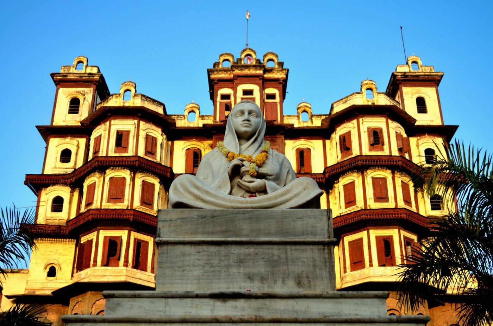

My Portfolio Website
My name is Karan Nandankar and I am an undergraduate student of Manufacturing and Science Engineering, IIT Kharagpur. I am from Indore,Madhya Pradesh, which is recently declared as "Cleanest City of India". 